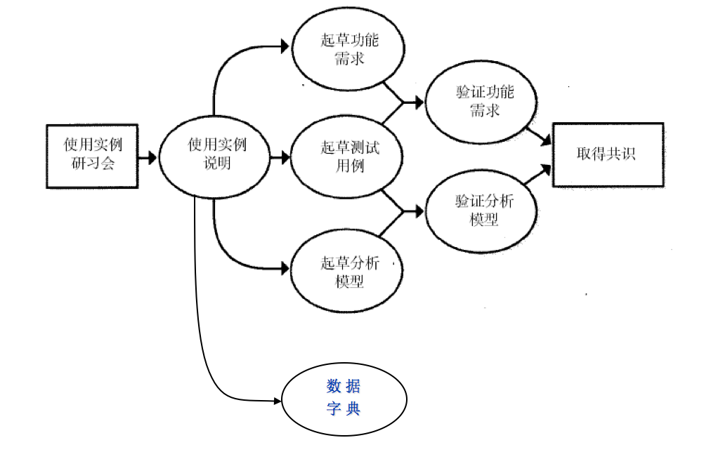

软件需求笔记
1. 基本的软件需求
1.1 软件需求
- 要解决的问题是：
- 什么是软件需求？
- 为什么要实现软件需求？
- 哪些人应参与软件需求
- 需求分析模型：
- 软件需求活动
- 需求诱导 → 需求分析 → 需求传递 → 需求确认 → 需求演化
- IEEE软件工程标准词汇表中定义软件需求为：
（1）用户为解决某个问题或达到目标而需具备的条件或能力。
（2）系统或系统部件为满足合同、标准、规范或其它正式文档而必须满足的条件或能力。
（3）上述（1）或（2）中定义的条件或能力的文档表达。 - 需求分析：
- 分析软件用户的需求，细致的进行、调查，把用户“做什么”的要求，最终转换为一个完全的、精细的软件逻辑模型。
- 并写出软件的需求规格说明。
- 准确地表达用户的要求。
- 需求的层次
- 业务需求：表示组织或客户高层次的目标。描述了组织为什么要开发一个系统，即目标。可以用前景和范围文档表述。
- 用户需求：描述的是用户的目标，或用户要求系统必须能完成的任务，即用户能使用系统来做些什么。可以用用例、场景描述和时间-响应表表述。
- 功能需求：规定开发人员必须在产品中实现的软件功能，用户利用这些功能来完成任务，满足业务需求，即开发人员需要实现什么。
- 需求不应该包括：
- 设计和实现的细节
- 项目计划信息
- 测试信息
1.2 需求工程
1. 需求开发
- 需求开发的过程：
- 诱导 → 分析 → 规范化 → 确认
2. 需求管理
- 需求管理的4个主要内容：
- 变更控制：建议变更；分析影响；作出决策；交流；合并；测量需求的稳定性。
- 版本控制：确定需求文档版本；确定单个需求文档版本。
- 需求跟踪：定义对其它需求的连接链；定义对其它系统元素的连接。
- 需求跟踪状态：定义需求状态；跟踪需求每一个状态。
- 需求开发与需求管理的分界
需求的好坏
- 糟糕的需求
- 用户参与不足
- 用户需求扩展
- 有歧义的需求
- 镀金问题
- 过于抽象的需求
- 忽略了某类用户
- 不准确的计划
- 理想情况下需求的性质
- 完整的
- 正确的
- 可行的
- 必须的
- 优先化的 / 有优先次序的
- 清楚的 / 无歧义的
- 可检验的 / 可验证性
- 需求规格说明的特点
- 完整性
- 一致性
- 可修改性
- 可跟踪性
2. 客户眼中的需求
用户：是一种泛称
- 掏钱买软件的用户称为客户
- 真正操作软件的用户叫最终用户
- 间接用户既不掏钱买该软件产品，也不使用该软件，但是它可能对软件产品有很大的影响。
- eg. 财务软件 -> 国家财政局审核
- 客户与最终用户可能是同一个人也可能不是同一个人
涉众
- 涉众：在软件开发项目中主要是指和这个项目有密切相关利益的人，他们共同感兴趣的就是需求分析阶段。
- 这些涉众包括客户、用户、业务或需求分析员、开发人员、测试人员、用户文档编写者、项目管理者和客户管理者。
- 需求分析员：负责收集客户需求并编写文档，以及负责客户与开发机构之间联系沟通的人
软件客户的权利(!!!)
- 要求需求分析员使用客户的语言
- 要求需求分析员熟悉客户的业务，了解客户对系统的目标
- 要求需求分析员把需求收集过程中客户提供的信息组织成书面的
软件需求规格说明 - 要求需求分析员解释需求过程生成的所有工作结果
- 要求需求分析员和开发人员尊重客户，始终以合作和专业的态度与客户进行互动
- 要求需求分析员和开发人员为需求和产品实现提供思路和备用方案
- 要求开发人员实现能让产品使用起来更容易、更有趣的特性
- 调整需求，便于重用已有的软件组件
- 在提出需求变更时，获得对变更的成本、影响及二者权衡关系的真实评估
- 获得满足功能和质量要求的系统，这些要求必须事先告知开发人员征得其同意
软件客户的义务
- 为需求分析员和开发人员讲解业务并定义业务术语
- 提供需求，阐明需求，通过与开发人员的交互将需求充实完善
- 对系统需求的描述必须详细、准确
- 需要时，及时对需求做出决断
- 尊重开发人员对需求成本和可行性的评估
- 与开发人员协作，为功能需求、系统特性和用例设置优先级
- 审阅需求文档，评估原型
- 发现需要变更需求时，及时与开发人员沟通
- 按照开发组织的变更控制过程提出需求变更
- 尊重需求分析员在需求工程中使用的过程
3. 需求工程的推荐方法
- 需求工程的推荐方法：
- 知识技能
- 需求管理
- 项目管理
- 需求开发：
- 获取
- 分析
- 编写规格说明书
- 验证
4. 需求分析员
- 需求分析员：
- 是对软件项目设计的需求进行收集、分析、记录和验证等工作的主要承担者。
- 是用户群体和软件开发团队之间进行需求沟通的桥梁。
- 是收集和传播的中心角色。
- 需求分析员是一种项目角色，而不是职务头衔。
- 需求分析员称职与否关系到项目的成败。
- 需求分析员的任务 深刻了解
- 定义业务需求
- 确定项目涉众和用户类别
- 获取需求
- 分析需求
- 编写需求规格说明
- 为需求建模
- 主持对需求的验证
- 引导对需求的优先级划分
- 管理需求
- 需求分析员的来源：
- 从用户转为分析员
- 从开发人员转为分析员
- 应用领域专家 / 主题专家
5. 确定产品前景与项目范围
- 项目视图：描述了产品所涉及的各个方面和最终所具有的功能。
- 项目范围：
- 描述了产品应包括的部分和不应包括的部分。
- 说明了在包括的部分与不包括的部分之间的界线。
前景与范围文档
- 业务需求
- 包括背景、业务机遇、业务目标与成功标准、客户与市场需求、业务风险
- 解决方案的前景
- 包括前景声明、主要特征、假设与依赖
- 范围与限制
- 包括第一个版本的范围、各后续版本的范围、限制与排除
- 业务背景
- 包括涉及简介、项目优先级、操作环境
DFD图
- 关联图（0层DFD） ：
- 确定了通过某一接口与系统相连的外部实体。有时，称为“端点”。
- 以及，外部实体和系统之间的数据流和物流
- 我们把关联图，作为结构化分析方法，形成数据流图的最高抽象层。
6. 获取客户的需求
- 需求的来源
- 与潜在的用户进行交谈和讨论
- 描述现有产品或竞争产品的文档
- 系统需求规格说明
- 现有系统的问题报告和改进要求
- 市场调查和用户问卷调查
- 观察用户如何工作
- 用户工作的情景分析
- 时间和响应
- 用户代言人
- 用户代言人本身就是实际用户
- 外部的用户代言人
- 对用户代言人的要求：计划、需求、确认和验证、用户辅助、变更控制
- 设置多位用户代言人
- 设置用户代言人会出现和应避免的问题 P72
- 步骤
- 准备调查：首先，需求分析员应当起草需求调查问题表，将调查重点锁定在该问题表内，否则调查工作将变得漫无边际。其次，需求分析员应当确定需求调查的方式。最后需求分析员与被调查者建立联系，确定调查的时间、地点、人员等。
- 执行调查：按照计划执行调查。在调查过程中随时记录（或存储）需求信息。需求分析员与用户面谈时应守时，先去了解用户的身份、背景。
- 为了征求客户的意见，必须采取以下几步：
- 明确项目用户需求的来源。
- 明确使用该产品的不同类型的用户。
- 与产品不同用户类的代表进行沟通。
- 遵从项目的最终决策者的意见。
7. 聆听客户的需求
需求获取
- 需求获取是最困难、最关键、最容易出错和最需要沟通的环节
- 需求获取的方式：面谈、小组讨论、解决冲突等
- 多问“为什么”
- 获得业务问题或总体特性
- 设身处地
- 对现有系统最感到烦恼的事情是什么？
- 工作流程—流程图和判定树
- 编写文档及评审
需求获取讨论会
- 建立基本规则
- 不超出范围（项目范围）
- 使用活动挂图来捕获以后再考虑的一些条目
- 时间盒讨论
- 保持较小的团队规模并找到合适的参与者（人多误事）
- 确保每个人都积极地参与讨论
将客户的意见归类
- 业务需求
- 用例或场景
- 业务规则
- 功能性需求
- 质量属性
- 外部接口需求
- 约束
- 数据定义
- 解决思路
8. 理解用户需求
- 需要了解 使用用例获取方法
- 使用用例产生的成果：数据字典 
使用用例的好处
- 使用户更清楚地认识到新系统允许他们做什么
- 防止“孤立”的功能
- 揭示对象以及它们之间的责任
使用用例时应避免的问题
- 太多的使用用例
- 使用用例的冗余
- 使用用例中的用户界面的设计
- 使用用例中包括数据定义
- 试图把每一个需求与一个使用实例相联系
需求整理和分析的过程
- 需求收集 -> 解释原始数据 -> 整理需求 -> 设置权重 -> 概念选择
- 整理单项需求：黄纸贴
- 头脑风暴
单项需求重要性定义（BSA）
- B（Basic）：基本需求
- S（Satisfied）：让客户更满意的需求
- A（Attractive）：更有吸引力的需求
9. 遵守规则
- 遵守业务规则（从讨论会来）
- 业务规则：是对业务的某个方面进行定义或约束的语句
- eg. 政策性法规
- 业务规则的分类：
- 事件
- 约束
- 动作触发规则
- 计算
- 推论
10. 编写需求文档
- 软件需求规格说明
- 精确地阐述了一个软件系统必须提供的功能和性能，以及所要考虑的限制条件。
- 是一个软件系统成功的基础
- 编写软件需求规格说明的三种方法：
- 用好的结构化和自然语言编写文本型文档
- 建立图形化模型方法：模型可以描绘转换过程、系统状态和它们之间的变化、数据关系、逻辑流或对象类和它们的关系。
- 编写形式化规格说明：这可以通过使用数学上精确的形式化逻辑语言来定义需求。
- 高质量需求文档，所具有的特征：
- 完整性
- 一致性
- 必要性
- 明确性
- 可验证性
- 可更改性
- 可跟踪性
- 注意事项：(最后的分析题可以用到)
- 对节、小节和单个需求的号码编排，必须一致。
- 正确使用各种可视化强调标志 —— 例如，黑体、下划线、斜体等
- 创建目录表和索引表，有助于读者寻找所需的信息。
- 对所有图和表，指定号码和标识号，并且可按号码进行查阅。
- 使用字处理程序中，交叉引用的功能，来查阅文档中其它项或位置。
- 优秀的需求文档应该考虑：
- 保持语句和段落的简短。
- 采用主动语态的表达方式。
- 编写具有正确的语法、拼写和标点的完整句子。
- 使用的术语与词汇表中所定义的应该一致。
- 需求陈述应该具有一致的样式。
- 为了减少不确定性，避免模糊的、主观的术语。
- 避免使用比较性的词汇
- 编号：
- 序列号 如：UR-9、SRS-43
- 层次化编码 如：3.2.1
- 层次化文本标签
- 数据字典
- 数据字典是一个共享存储库，用于定义应用程序中使用的所有数据元素或属性的含义、数据类型、长度、格式、需要的精度以及数据允许的取值范围或数据值的列表。
- 数据字典与数据流图配合，能清楚地表达数据处理的要求
11. 需求的图形化分析
- 软件系统从三个方面来表达
- 过程：数据流图
- 数据：实体-关系图
- 状态：状态转换图，对话图，判定表和树。
- 数据流图：一个数据流图可以标识系统的转换过程、系统所操纵的数据或物质集合（存储），以及过程、存储和外部世界之间的数据流或物质流。
- 过程：用圆圈表示
- 端点：用矩形框表示
- 数据流：用箭头表示
- 数据存储区：用一对平行线表示
- 实体-关系图：描绘了系统的数据关系
- 实体用单名词来命名。用矩形框表示。
- 每个实体要用几个属性来描述，每个实体的单个实例具有不同的属性值。
- 关系用能描述关系的本质来命名，它确定了一对实体之间在逻辑上和数量上的连接。用菱形框表示。
- 状态转换图：表示处理结果可能的状态转换。
- 系统状态，用矩形框表示。
- 状态改变，用箭头连接一对矩形框表示。
- 事件或条件，在每个迁移箭头上用文本标签来表示。
- 对话图：在较高的抽象层次上表示用户界面的设计，它展示了系统的对话元素及这些元素之间的导航连接，但没有展示详细的屏幕设计。一种状态转换图
- 每个对话元素表示为一个状态，用矩形框表示
- 将每个允许的导航选项表示为一个转换，用箭头表示。
- 触发用户界面导航的条件表示为转换箭头上的文本标签。
- 决策表：应用表格的形式进行需求表达。
- 可列出影响系统行为的所有因素的各种取值，并表明对这些因素的每一种组合所期望的系统响应动作。
- 决策树：采用一种树形结构表达需求。用树形结构表示动作的各种分支。
12. 软件质量属性
- 质量属性难以挖掘
- 软件质量属性是系统非功能性需求的一部分。
- 非功能需求：描述系统展现给用户的行为和执行的操作等。
- 主要对用户重要的属性 一定了解
- 可用性：系统能够正常运行的时间比例。
- 有效性：系统如何优化处理器、磁盘空间或通信带宽的。
- 灵活性：在产品中，增加新功能时，所需工作量的大小。
- 完整性
- 互操作性：表明了产品与其它系统交换数据和服务的难易程度。
- 可靠性：软件无故障执行一段时间的概率。
- 健壮性：是指当系统或其组成部分遇到非法输入数据、相关软件或硬件组成部分的缺陷或异常的操作情况时，能继续正确运行功能的程度。
- 易用性：对于新用户或不常使用产品的用户在学习使用产品时的难易程度。
- 主要对开发人员重要的属性：
一定了解 - 可维护性：在软件中纠正一个缺陷或做一次更改的难易程度。
- 可移植性：把一个软件从一种运行环境转移到另一种运行环境中所花费的工作量。对于工程的成功是不重要的。
- 可重用性：除了在最初开发的系统中使用之外，还可以在其它应用程序中使用的程度。
- 可测试性：测试软件组件或集成产品时查找缺陷的难易程度。
13. 通过原型法减少项目风险
- 一个软件原型：是所提出的新产品的部分实现
- 使用软件原型的3个目的：
- 明确并完善需求
- 研究设计选择方案
- 发展为最终产品
原型的分类
- 水平原型（行为原型或演示性模型）主要描绘用户界面的一部分，不深入到体系结构的所有层次。
- 垂直原型（结构化原型或概念模型）主要在技术服务层次上实现应用程序用户界面的一部分功能，它触及到了系统实现的所有层次。
- 进化型原型是螺旋式软件开发生命周期模型和某些面向对象软件开发过程的一个组成部分。
- 废弃型原型是指达到预期目的后，原型本身被抛弃。
- 用途：解决需求不确定性、二义性、不完整性、含糊性等。
- 书面原型和电子原型：用平面工具把系统是如何实现的呈现在用户面前。
- 是一种廉价、快速，并且不涉及高技术的方法
- 它可以把一个系统某部分，是如何实现的呈现在用户面前。
- 使用原型法的若干可能的方法
- 原型法的好处
- 提供了一套强有力的技术
- 可以缩短开发进度
- 增加用户的满意程度
- 生产出高质量的产品
- 可以减少需求错误和用户界面的缺陷。
14. 设定需求优先级
为什么要划分优先级
- 设定优先级的好处:
- 有助于项目经理解决冲突、安排阶段性交付，并且，做出必要的取舍。
- 尽早确定出所交付的产品应具备的最重要的功能
- 权衡合理的项目范围和进度安排、预算以及质量目标的约束
- 设定优先级的一般方法是
- 把需求分成三类：高、中、低
- 每一个需求的优先级，必须写入软件需求规格说明或使用实例的说明中。
基于价值、费用和风险的优先级设定
- 列出要设定优先级的所有需求、特性或使用实例；
- 估计每一个特性提供给客户或业务的相关利益。
- 估计出如果没有把应该实现的特性包括到产品中，将会给客户或业务上带来的损失。
- 总价值栏是相对利润和相对损失的总和。
- 总价值 = 相对利益 * 利益权值 + 相对损失 * 损失权值
- 估计实现每个特性的相对费用。
- 估计出与每个特性相关的技术或风险相对程度。
- 一旦把所有的估算写入平面表，就可以利用如下公式计算出每一特性的优先级：
- 优先级 = 价值% / (费用% * 费用权值+ 风险% * 风险权值)
- 按计算出的优先级的降序排列表中的特性。
15. 需求确认
- 需求确认：是指开发方和客户方共同对《产品需求规格说明书》进行评审，双方对需求达成共识后作出承诺。
- 需求确认包含两个重要工作：
- 需求评审
- 需求承诺
- 评审过程要干些什么 看每一个步骤大概要点
- 需求评审的参与者(5-9人)
- 产品的开发者及其可能的同组成员
- 先前产品的开发者或正在评审的项目的SRS编写者
- 要根据正在审查的文档来开展工作的人
18. 需求管理的原则与实现
- 需求管理的4个部分，每部分大概需要做什么。
- 需求基线-是团队成员已经承诺将在某一特定产品版本中实现的功能性和配功能性需求的一组集合。
19. 变更管理
- 注意事项：
- 应仔细评估已建议的变更
- 挑选合适的人选对变更做出决定
- 变更应及时通知所有涉及的人员
- 项目要按一定的程序来采纳需求变更
- 变更控制策略
- 所有需求变更必须遵循一个过程，按照此过程，如果一个变更需求未被采纳，则其后过程不再予以考虑。
- 对于未获批准的的变更，除可行性论证之外，不应再做其他设计和实现工作。
- 简单请求一个变更不能保证能实现变更，要由项目CCB决定实现哪些变更。
- 项目风险承担者应该能够了解变更数据库的内容。
- 绝不能从数据库中删除或修改变更请求的原始文档。
- 每一个集成的需求变更必须能跟踪到一个经核准的变更请求。
考点：对整个需求过程比较关键的环节的概念比较重要。
- 做需求需要哪几个典型阶段
- 每个阶段需要哪些参与者
All articles in this blog are licensed under CC BY-NC-SA 4.0 unless stating additionally.